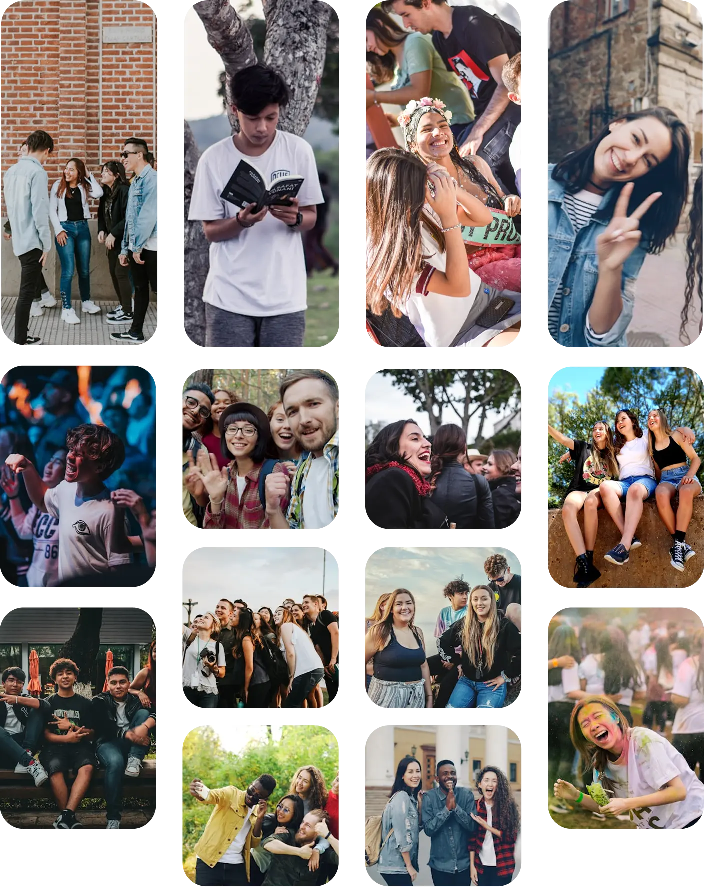
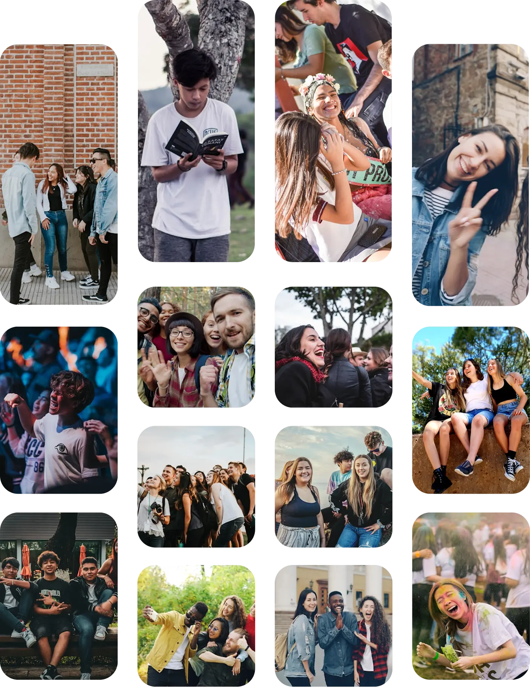
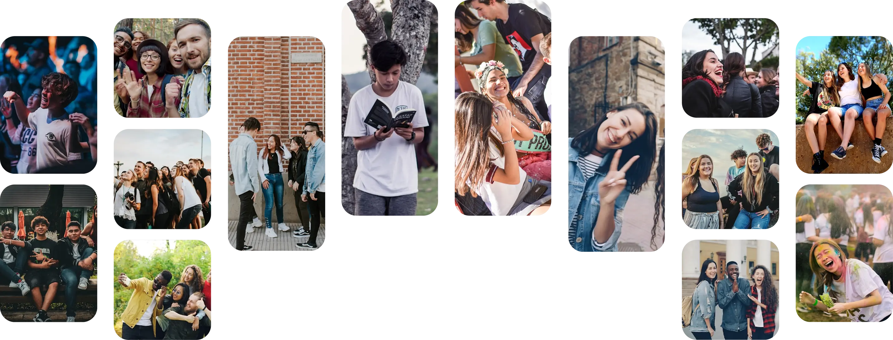

Origen:
Identidad y Propósito en Cristo
Congreso Juvenil

Origen:
Identidad y Propósito en Cristo

El modelo S.A.N.A.R. garantiza que cada actividad, desde la predicación más solemne hasta el juego más dinámico, tenga una razón de ser dentro del ecosistema del congreso.
Lugar
Phoenix, Arizona
Fecha
16-18 de octubre de 2026
Las 5 Fases del Modelo S.A.N.A.R.
El proceso de sanidad exige limpiar el terreno primero. Esta fase está diseñada para llevar a los jóvenes a la renuncia. Se invitará a la audiencia a soltar el peso de la culpa, los vicios, la ansiedad y las falsas expectativas que el mundo les impone. Para que un joven pueda descubrir su verdadera identidad, primero debe despojarse de todo lo que lo ata.
Ver las actividadesUn corazón que ha sido vaciado no puede quedar a la deriva. En esta fase, el enfoque es pedir y recibir la unción del Espíritu Santo. Psicológica y espiritualmente, es el momento de la afirmación: los jóvenes son llamados a abrazar su adopción divina y su identidad en Cristo, llenando el espacio dejado la noche anterior con una profunda certidumbre espiritual.
Ver las actividadesLa identidad cristiana se estanca si no tiene un propósito. Una vez llenos del Espíritu, el paso lógico en su sanidad es volcarse hacia los demás. En este bloque, realizaremos un impacto misionero masivo. Al salir a compartir el mensaje de Dios y nutrir a la comunidad, los jóvenes viven su propósito de primera mano, pasando de la introspección a la acción.
Ver las actividadesDespués de servir, la respuesta natural es la gratitud, pero entenderemos la adoración más allá del canto: como una actitud integral y de comunidad. Este bloque será altamente interactivo; aunque contaremos con participaciones musicales inspiradoras de distintos grupos de la Unión, el espacio integrará dinámicas grupales y juegos bíblicos. El orador conectará estas actividades bajo la premisa de que adorar es también celebrar nuestra fe juntos, reforzando el sentido de pertenencia y manteniendo la continuidad lógica del programa.
Ver las actividadesLa sanidad mental y espiritual incluye el esparcimiento sano. Para concluir la experiencia, demostraremos que la fe es práctica, alegre y relacional. A través de una gran kermés, torneos deportivos y dinámicas sociales, los jóvenes recrearán su mente y su cuerpo. Esto cierra el congreso fortaleciendo lazos de amistad, generando altos niveles de bienestar y dejando el deseo de regresar en el futuro.
Ver las actividadesTe compartimos algunas sugerencias de Airbnb independientes al evento.
Recomendamos verificar su disponibilidad y reservar con tiempo, ya que los espacios suelen agotarse rápido.


Cargando alojamientos disponibles...
Orador, Invitado Especial
Nacido en México y formado teológicamente en España, cuenta con una Maestría en Teología por la Facultad Adventista de Sagunto. Su ministerio se ha destacado por una profunda vocación hacia las nuevas generaciones, acumulando una amplia experiencia como capellán, pastor de jóvenes y coordinador juvenil (JAE) en el país europeo. Actualmente sirve como Pastor en las iglesias de Alenza y Colmenar Viejo, es Coordinador de la Zona Centro en España y lidera el proyecto "Inverso" de la Editorial Safeliz. Su mayor motor para servir es su familia: está casado con Hanna desde 2018 y es padre de la pequeña Olivia.

Nuestro cronograma está diseñado para equilibrar crecimiento espiritual, aprendizaje, comunidad y diversión. Revisa los horarios, llega a tiempo y prepárate a vivir una experiencia que marcará tu vida.
| Fecha | Título | Etiquetas | Responsable | Locación | Detalles |
|---|---|---|---|---|---|
| {{ evento.horario[0] }} {{ evento.horario[1] }} | {{ evento.titulo }} | {{ tag }} | {{ evento.speaker }} | {{ evento.locacion }} | Inscribirme |



{{ item.text }}
{{ item.author.conference }}
Origen está diseñado principalmente para jóvenes y jóvenes adultos que desean fortalecer su identidad y propósito en Cristo. Sin embargo, cualquier persona interesada en participar y vivir la experiencia será bienvenida.
El Congreso Juvenil Origen se llevará a cabo del 16 al 18 de octubre de 2026 en Phoenix, Arizona. Los detalles específicos de las instalaciones y ubicaciones de las actividades estarán disponibles para los inscritos.
Una vez que se habilite la inscripción, puedes registrarte directamente desde la sección de agenda o mediante el boton principal de inscripción. Una vez completado el registro, recibirás información adicional por correo electrónico.
La inscripción brinda acceso a las conferencias, actividades espirituales, dinámicas grupales, espacios de adoración y experiencias comunitarias programadas durante el congreso.
Lamentamos mencionar que no está incluido. El hospedaje es independiente del evento. En esta página encontrarás algunas recomendaciones de alojamientos cercanos para facilitar tu planificación.
Sí. El congreso está pensado para una audiencia hispanohablante y las actividades principales se desarrollarán en español.
Sí. El programa incluye dinámicas grupales, juegos, actividades misioneras, espacios de convivencia, torneos y otras experiencias diseñadas para fomentar la amistad y el bienestar integral.
Contáctanos y pronto uno de nuestros colaboradores se comunicará contigo para ayudarte.